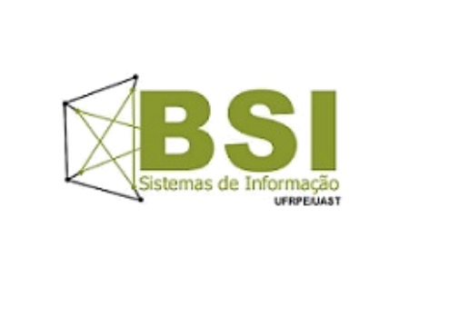

Cursos
Ciência da Computação

O curso de Bacharelado em Ciência da Computação foi criado na sede da UFRPE visando a atender a uma demanda reprimida no estado de Pernambuco por profissionais capacitados, com perfil inovador e sólida formação científica na área de Informática. O egresso desse curso estará apto a atuar no desenvolvimento científico e técnico da computação e também a aplicar todo o conhecimento e experiência adquiridos na solução de problemas reais, promovendo o desenvolvimento tecnológico da sociedade. Será dada ênfase especial no uso de laboratórios para uma familiarização com projetos complexos envolvendo o desenvolvimento e implementação de software. Como exemplo de demandas a serem atendidas, pode-se citar, dentre outras: armazenamento de grandes volumes de informações dos mais variados tipos e formas e sua recuperação em tempo aceitável; gerenciamento de todo o ciclo de vida do software; desenvolvimento de jogos e ferramentas para apoio ao ensino, em cooperação com a Unidade de Educação a Distância da UFRPE e com o curso de Licenciatura em Computação; estabelecimento de conexões seguras, rápidas e confiáveis utilizando os mais modernos recursos de segurança; gerenciamento dos mais diversos parques computacionais existentes, incluindo tendências atuais como a computação em nuvem.
O Bacharel em Ciência da Computação será um profissional capaz de detectar, analisar, documentar e viabilizar possíveis aplicações da computação na solução de problemas nas diversas áreas de conhecimento, bem como de atender a demandas emergentes do mercado e da sociedade, sendo um catalisador no uso e disseminação da Computação para o bem comum do homem e da sociedade.
Sistema de Informação

O curso de Bacharelado em Sistemas de Informação, por sua natureza interdisciplinar, busca transmitir ao discente uma formação básica em Computação, Matemática, Teoria dos Sistemas e Engenharia de Software, sendo complementado por matérias nas áreas de Ciência da Informação, Administração, Matemática Aplicada e Modelagem.
No Curso de Bacharelado em Sistemas de Informação, PBL (Problem Based Learning) será executado transversalmente por semestre. Problemas reais de mercado serão trazidos para o contexto de aula para que os estudantes os resolvam utilizando os conteúdos vistos no semestre corrente e anteriores. Os problemas serão selecionados pelo Colegiado de Curso a cada início de semestre onde empresas de TICs serão convidadas formalmente a apresentarem suas propostas ao Colegiado. Assim, está garantida a inserção das demandas do mercado nas linhas de execução dos problemas tratados durante o Bacharelado pelos estudantes.
Além disso, todas as disciplinas são ministradas em laboratório de
computação, para que os estudantes estejam imersos nos problemas a serem resolvidos diariamente. Assim, todos os docentes, semestralmente, serão apresentados com antecedência mínima de dois (2) meses aos problemas selecionados para que direcionem suas aulas, exemplos e exercícios de avaliação de forma a instruir e colaborar como consultores nos problemas. O acompanhamento da integração dos conteúdos ministrados e os problemas a serem solucionados será realizado por avaliações periódicas com os estudantes e professores pelo Colegiado de Curso.
Licenciatura em Computação
O curso de Licenciatura em Computação da UFRPE foi instituído em 1999, implantado segundo Resolução CUNI no. 181/99, sendo a primeira oferta de vestibular em 2000. O curso passou por uma reformulação de seu projeto pedagógico em 2017 e encontra-se legalmente autorizado segundo Resolução CEPE 220/2018.
Objetivo geral do curso: Formar profissionais com sólida base humanística e tecnológica para atuar como professores na educação básica e em espaços não escolares, e na pesquisa, desenvolvimento e inovação em práticas educacionais.
Objetivos específicos:
Formar profissionais cientes da importância da introdução e desenvolvimento do pensamento computacional e algorítmico na educação básica, e protagonistas de iniciativas nesse sentido, em contextos interdisciplinares;
Fomentar e desenvolver práticas criativas e inovadoras de ensino com o apoio de tecnologias contemporâneas, que sejam tanto aplicadas no curso quanto aprendidas pelos discentes para seu futuro como educadores;
Formar profissionais para atuar no projeto, desenvolvimento, avaliação e gestão de tecnologias em contextos educacionais;
Desenvolver valores humanos orientados a compromisso social, sustentabilidade, diversidade e ética, que devem nortear a atuação do egresso, em especial no uso de tecnologias visando o bem social e comunitário.
Perfil do profissional:
O profissional formado em Licenciatura em Computação deve ser um educador que, utilizando os avanços da informática, contribua e seja capaz de gerar inovações nos processos de ensino e aprendizagem, sendo agente integrador entre os diversos conteúdos da formação do estudante. Deve ser um profissional crítico, com formação pedagógica, computacional, ética e humanística, capaz de aplicar o conhecimento adquirido ao longo de sua formação de modo a propor soluções tecnológicas criativas e inovadoras para problemas relativos às suas diferentes áreas de atuação.